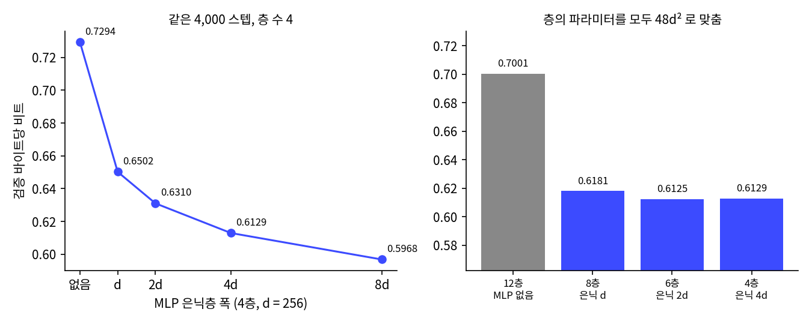
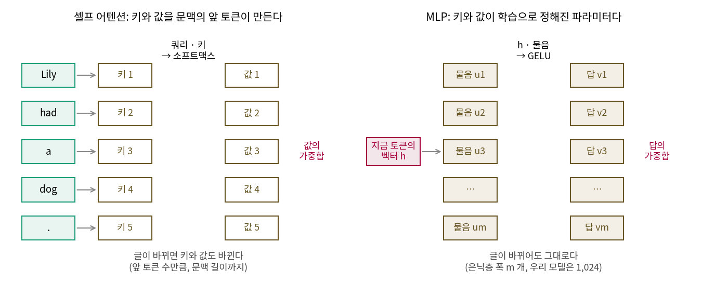
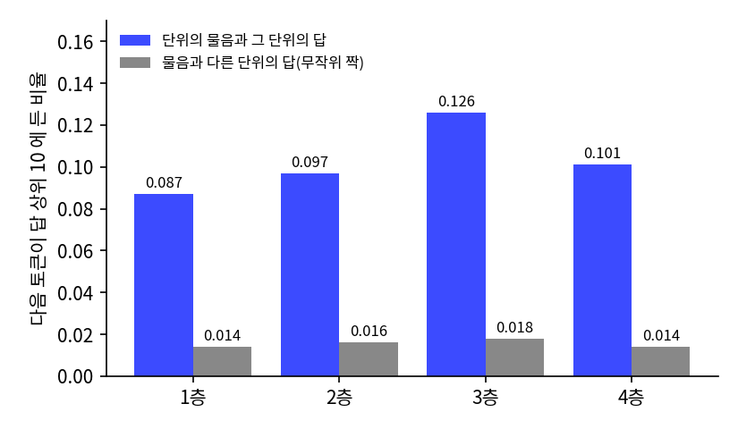
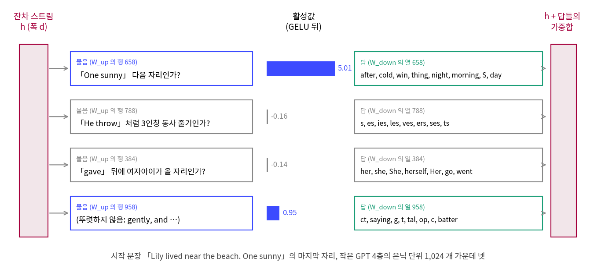

MLP 는 무엇을 아는가: 물음과 답, 그리고 지식이 있는 곳
이 장의 물음
GPT 의 층 하나는 어텐션과 MLP 로 되어 있다. 어텐션은 헤드 여럿이 앞 토큰 가운데 어디를 읽을지 나눠 고른다는 것을 보았다. 그런데 층의 파라미터 가운데 3분의 2는 MLP 가 쓰고, MLP 가 무슨 일을 하는지는 코드 어디에도 적혀 있지 않다. 이 장은 그 MLP 를 열어 보고, 민준이 세운 추측 「루나의 지식은 MLP 에 있다」를 지우기 실험으로 확인해 본다.
부품의 역할을 시험하는 방법은 두 가지다. 학습을 마친 모델에서 부품의 출력을 0 으로 바꾸는 지우기는 지금 이 모델이 무엇에 기대는지를 보여 주고, 그 부품 없이 처음부터 다시 학습하는 실험은 그 부품이 꼭 있어야 하는지를 보여 준다. 헤드 하나를 지웠을 때 멀쩡해도 함께 지우면 무너졌던 것처럼, 두 실험은 서로 다른 것을 측정한다.
| 이 장에서 부르는 이름 | 층 · 폭 · 헤드 | 쓰는 곳 |
|---|---|---|
작은 GPT (gpt_small.pt) |
4층 · 256 · 4 개 | 은닉층 폭 실험, 은닉 단위 열기, 「Lily 의 개 이름」 |
| 동화 GPT | 8층 · 512 · 8 개 | 층·부품·자리 지우기 |
| 다시 학습한 4층 | 4층 · 256 · 4 개에서 MLP 나 어텐션을 뺌 | 지우는 것과 처음부터 없는 것 |
| 장난감 모델 | 1층 · 64 · 2 개 | 기출 문제만 되풀이해 풀기 |
- 어텐션이 앞 토큰을 읽는다면, 층마다 어텐션의 두 배나 되는 파라미터를 쓰는 MLP 는 무엇을 할까? 은닉층의 폭 4d 와 모델 폭 d 는 각각 무엇을 정할까?
- 모델이 아는 사실이 MLP 에 들어 있다면, MLP 를 지우면 지식만 사라지고 앞 문맥을 베끼는 일은 멀쩡할까?
- 외운 것과 풀어내는 힘은 어떤 관계일까? 사람의 공부와 루나의 학습은 어디까지 닮았을까?
- 「~임을 안다」와 「~할 줄 안다」는 어떻게 다를까? 키와 값을 묶은 행렬 하나에는 사실을 몇 개까지 저장할 수 있을까?
MLP 의 은닉층: 물음 1,024 개와 답 1,024 개
헤드 이야기를 마친 서연이 파라미터 표로 돌아가 「층 하나의 MLP」 줄에 밑줄을 그었다. 525,568 개로, 같은 층 어텐션의 263,168 개보다 두 배 많다.

어텐션은 앞 토큰 가운데 무엇을 읽을지 고르는 장치라서 하는 일이 분명해. 그런데 MLP 는 파라미터를 어텐션의 두 배나 쓰면서 무슨 일을 하는지 잘 모르겠어.

다음 토큰을 맞히는 거 아냐?

그건 모델 전체가 하는 일이잖아. 어텐션도 출력 행렬도 다 그걸 위해 있는 거고. MLP 만 하는 일이 뭐냐는 거지.

…그러네. 그럼 MLP 를 빼고 학습해 보자. 빼서 무엇이 나빠지는지 보면 알겠지.
층마다 어텐션과 MLP 는 잔차 연결로 이어지는 폭 d 의 벡터를 읽고, 계산한 것을 그 벡터에 더해 쓴다. 이 벡터를 잔차 스트림이라 부르는데, 층들이 이 벡터를 어떻게 나눠 쓰는지는 모델 속을 들여다볼 때 자세히 본다. MLP 는 폭 256 인 잔차 스트림 벡터를 받아 폭 1,024 로 늘리고, GELU 를 씌운 뒤 다시 폭 256 으로 줄인다. 가운데의 1,024 칸을 은닉층 (MLP 안에서 폭을 늘린 가운데 칸들 / hidden layer)이라 부르고, 칸 하나를 은닉 단위라 부른다. 이 절은 은닉 단위 하나가 무엇을 하는지, 그리고 은닉층의 폭과 모델 폭 d 가 어떤 관계인지를 실험과 들여다보기로 확인한다.
은닉층을 빼고, 좁히고, 넓혀 보기
민준은 폭 d = 256 과 4층은 그대로 두고 MLP 은닉층의 폭만 0(MLP 없음), d, 2d, 4d, 8d 로 바꿔 다섯 모델을 학습했다. gpt.py 의 MLP 는 은닉층 폭이 4d 로 정해져 있어서, 스크립트 안에서 폭만 다른 MLP 를 바꿔 끼웠다. 학습 조건은 GPT 와 MLP 언어 모델을 비교할 때와 같다(4,000 스텝, 스텝당 16,384 토큰, 학습률 2e-3, 시드 1337).
# sources/gpt/mlp_width_sweep.py 에서 발췌
def make_mlp(hidden):
class MLP(nn.Module): # gpt.py 의 MLP 와 같고 은닉층 폭만 hidden
def __init__(self, cfg):
super().__init__()
self.c_fc = nn.Linear(cfg.n_embd, hidden)
self.c_proj = nn.Linear(hidden, cfg.n_embd)
def forward(self, x):
return self.c_proj(F.gelu(self.c_fc(x)))
return MLP
G.MLP = make_mlp(max(hid, 1)) # Block 이 G.MLP 를 불러 층을 만든다
cfg = G.GPTConfig(vocab_size=tok.vocab_size, block_size=256, n_layer=L, n_head=4, n_embd=D, mlp=hid > 0)
## 2. 요약 (검증 글 전체)
모델 파라미터 MLP 파라미터 손실 바이트당 비트 학습 초
4층, MLP 없음 2,169,344 0 2.0039 0.7294 94
4층, 은닉 d 2,697,728 526,336 1.7863 0.6502 146
4층, 은닉 2d 3,223,040 1,051,648 1.7334 0.6310 193
4층, 은닉 4d 4,273,664 2,102,272 1.6838 0.6129 230
4층, 은닉 8d 6,374,912 4,203,520 1.6394 0.5968 266
12층, MLP 없음 4,278,784 0 1.9232 0.7001 262
sources/gpt/mlp_width_sweep.out 의 마지막 표에서 여섯 줄을 옮겼고, 모델 여덟 개에 1,867초가 걸렸다.
은닉 4d 줄은 앞에서 학습한 작은 GPT 와 같은 모델이고, 바이트당 비트도 0.6129 로 같게 나왔다. MLP 를 빼면 0.7294 로, 같은 4,000 스텝을 학습한 MLP 언어 모델(0.9326)보다는 낫지만 작은 GPT 와의 차이가 0.12 비트나 된다. 은닉층을 d 만 줘도 0.6502 로, MLP 없는 모델과 작은 GPT 사이의 0.1165 비트 가운데 2/3 가 메워지고, 2d 에서 0.6310, 4d 에서 0.6129, 8d 에서 0.5968 이 된다. 폭을 두 배로 할 때마다 MLP 파라미터도 두 배가 되는데, 줄어드는 비트는 0.0792, 0.0192, 0.0181, 0.0161 로 작아진다. 학습 초는 GPU 를 다른 작업과 나눠 쓴 값이라 앞의 50초와 비교하지 않고 모델끼리의 차이로만 읽는다.
마지막 줄은 파라미터 수를 은닉 4d·4층 모델과 거의 같게 맞춘 것이다. 층 하나의 가중치가 어텐션 4d² 에 MLP 2dm 이니, 층의 가중치 합이 48d² 가 되도록 MLP 를 빼고 어텐션 층을 12층으로 늘렸다. 이 모델은 0.7001 로, 4층에 MLP 가 없는 모델(0.7294)보다 조금 나을 뿐이다. 같은 파라미터라도 어텐션만으로는 MLP 가 하던 일을 대신하지 못했다.

MLP 를 빼면 확실히 나빠지네. 그런데 숫자만 봐서는 은닉 단위 하나가 무엇을 하는지는 여전히 모르겠어.

그럼 학습을 마친 모델의 은닉 단위를 하나씩 열어 봐요. 그 전에 같은 물음을 먼저 던진 사람들의 이야기를 해 볼까요.
역사: 피드포워드 층은 키–값 기억이다
MLP 를 논문들은 피드포워드 층(feed-forward layer)이라 부른다. 우리 모델에서도 층 하나의 가중치 12d² 가운데 8d² 가 MLP 인데, 텔아비브 대학의 게바(Mor Geva) 팀은 이 사정을 「피드포워드 층이 트랜스포머 파라미터의 3분의 2를 차지하는데도 그 역할은 덜 연구되었다」고 적으며 연구를 시작했다. 그들은 「Transformer Feed-Forward Layers Are Key-Value Memories」(EMNLP 2021)에서 MLP 의 식을 다시 읽었다. 바이어스를 빼면 MLP 는 f(x·Kᵀ)·V 로 적히는데, 이것은 어텐션의 식에서 소프트맥스를 다른 함수로 바꾸고 키와 값을 문맥 대신 파라미터로 둔 것과 같다. 그래서 W_up 의 행 하나를 키, W_down 의 열 하나를 값으로 보고, 은닉 단위 하나를 키–값 기억 한 칸으로 보자고 했다.

확인은 사람 손으로 했다. 위키백과 글 WikiText-103 으로 학습한 16층 언어 모델(폭 1,024, 은닉층 4,096)에서 층마다 키를 10 개씩 무작위로 골라, 학습 글의 모든 문장 앞부분 가운데 그 키에 가장 크게 반응한 25 개를 뽑았다. 그리고 자연어 처리 대학원생들에게 25 개에서 되풀이되는 규칙을 찾게 했다. 모든 키에서 적어도 규칙 하나가 나왔고(키마다 평균 3.6 개), 뽑힌 앞부분의 65~80% 가 찾은 규칙에 들어맞았다. 아래층(1~9층)의 키는 「substitutes 로 끝난다」처럼 마지막 낱말이 같은 얕은 규칙에, 위층(10~16층)의 키는 「TV 프로그램 이야기」처럼 뜻이 같은 규칙에 반응했다.
값 쪽은 출력 임베딩으로 읽었는데, 값 벡터에 출력 임베딩 행렬을 곱하면 어휘 전체에 점수가 하나씩 생긴다. 그 1등 토큰이, 같은 단위의 키에 가장 크게 반응한 문장의 실제 다음 토큰과 같은 단위의 비율을 구했더니 1~10층에서는 0 에 가깝다가 11층부터 올라 3.5% 까지 갔다. 어휘가 27만 개쯤인 모델이라 아무 토큰이나 찍으면 0.0004% 가 나오는 비율이다. 다만 층 하나의 최종 예측은 많은 경우 단위 하나의 예측과 달랐다. 층의 예측이 그 층의 어느 단위의 1등 토큰과도 다른 경우가 적어도 68% 였고, 저자들은 층의 출력을 여러 기억이 합쳐진 결과라고 적었다.
이듬해 같은 팀(게바, 카치울라루, 왕, 골드버그)은 「Transformer Feed-Forward Layers Build Predictions by Promoting Concepts in the Vocabulary Space」(EMNLP 2022)에서 GPT-2 로 범위를 넓혔다. 값 벡터 하나가 올리는 토큰들을 사람이 읽어 보니, 11층의 한 값은 drinks, coffee, tea, soda, burgers 를 올렸고 다른 값은 which, whose, whom, where 를 올렸다. GPT-2 에서 값 벡터의 상위 토큰 가운데 개념으로 묶이는 것이 37% 로, 같은 통계를 가진 무작위 벡터의 16% 보다 많았다. 값 10 개의 무게를 키우는 것만으로 GPT-2 가 쓰는 글의 유해성을 50% 가까이 줄인 실험도 함께 실었다.
이 생각은 강의 영상으로도 널리 퍼졌다. 황자빈(Jia-Bin Huang)의 유튜브 영상 「Mixture of Experts (MoE), Visually Explained」는 W_up 의 행을 토큰에 던지는 물음으로, W_down 의 열을 그 물음에 관련된 사실로 읽으며 「The capital of Taiwan is」에서 타이베이를 담은 열 하나를 예로 든다.
물음과 답으로 읽기
MLP 의 계산을 은닉 단위마다 나눠 적으면 다음과 같다.
은닉 단위 i 는 세 가지 일을 한다. 먼저 들어온 벡터 h 와 자기 행 ui 의 내적으로 「지금 읽는 위치가 내가 찾는 경우인가」를 묻는다. 다음으로 GELU 가 음수 쪽을 0 근처로 눌러 「아니오」로 나온 물음을 지운다. 마지막으로 남은 물음마다 자기 열 vi 를 활성값 ai 만큼 곱해 잔차 스트림에 더한다. MLP 의 출력은 켜진 단위들의 답을 활성값의 무게로 더한 것이다.
어텐션과 나란히 놓으면 차이가 분명해진다. 어텐션도 쿼리와 키의 내적으로 고르고 값을 섞었지만, 어텐션의 키와 값은 문맥 속 앞 토큰들이 그때그때 만들어 내고, MLP 의 ui 와 vi 는 학습이 끝나면 고정되는 파라미터다. 어텐션은 「이 글의 앞」에서 찾아 읽고, MLP 는 학습 글 전체에서 배워 가중치에 적어 둔 것에서 찾아 읽는다. 서연이 물은 「MLP 만 하는 일」에 대한 첫 대답이 이것이다.
민준이 은닉 단위의 식과 키–값 그림을 번갈아 보다가 의자에서 몸을 일으켰다.

잠깐. 어텐션에만 키랑 값이 있는 줄 알았는데, MLP 도 W_up 으로 올리고 W_down 으로 내리면서 키–값 저장소 노릇을 하는 거잖아!
그렇게 읽을 수 있다는 거지. 그게 그렇게 신나?
생각해 봐. 어텐션의 키랑 값은 그 글 안에서 그때그때 만들어지고 글이 끝나면 사라져. MLP 의 키랑 값은 파라미터에 남아. 모델 자체의 기억을 여기에 담고 있다는 거잖아. 그러면 여기가 루나의 지식을 좌우하는 가장 중요한 부분이겠네! 별과 우주를 가르치는 것도 결국 여기에 적는 일이고.
「가장 중요한 부분」은 어떻게 측정하는데?

…지워 보면 되지. 일단 단위부터 열어 볼게.
이렇게 읽으면 모델 폭 d 와 은닉층 폭 m 이 맡는 일이 나뉜다.
- d 는 물음 하나와 답 하나의 길이다. 모든 물음은 같은 잔차 스트림 256 개의 수를 읽고, 모든 답은 같은 256 개의 수에 더해진다. d 가 크면 물음을 더 섬세하게 적을 수 있고, 답 하나에 더 많은 것을 실을 수 있다.
- m 은 물음과 답의 쌍이 몇 개인가다. 물음이 많으면 더 많은 경우를 따로 알아보고 경우마다 다른 답을 줄 수 있다.
- 파라미터는 물음 m × d 와 답 d × m 을 합친 2dm 이고, m = 4d 이면 8d² 다. 토큰마다 물음 m 개를 모두 계산하므로 계산량도 2dm 에 비례한다.
256 차원 공간에서 서로 직각인 방향은 256 개뿐인데 물음은 1,024 개라서, 물음 방향들은 서로 겹칠 수밖에 없다. 그래도 되는 이유는 한 자리에서 켜지는 물음이 몇 개뿐이어서다. 검증 글 200만 토큰에서 활성값이 0 보다 큰 단위는 자리마다 평균 1층 27.0%, 2층 7.7%, 3층 9.8%, 4층 14.3% 였다(sources/gpt/mlp_units.out, GELU 는 음수 쪽에 작은 값을 남기므로 0 보다 큰 것만 셌다).
평면에 축 셋을 둔 별 모양처럼, 256 차원에 물음 1,024 개를 두고 자리마다 그 가운데 일부만 켠다. 은닉층이 모델 폭보다 넓은 것은 그래서 낭비가 아니다.
단위 하나를 열어 보기
앞에서 학습한 작은 GPT 를 검증 글 앞 1,999,872 토큰에 걸고, 자리마다 층별 은닉 단위 1,024 개의 활성값을 기록했다. 단위마다 가장 크게 반응한 20 자리가 그 단위의 물음을 보여 준다. 답은 그 단위의 vi 를 모델이 마지막에 쓰는 정규화의 눈금과 출력 행렬(토큰 임베딩과 같은 행렬)로 읽어, 로짓을 가장 크게 올리는 토큰들로 본다. 게바 팀이 값 벡터를 출력 임베딩으로 읽은 방법과 같다.
# sources/gpt/mlp_units.py 에서 발췌
WU = m.lm_head.weight.detach().float() # (V, d) 출력 행렬
gamma = m.ln_f.weight.detach().float() # 마지막 정규화의 눈금 (d,)
def answer_logits(l):
Wd = m.blocks[l].mlp.c_proj.weight.detach().float() # (d, 1024), 열 i = 단위 i 의 답
cols = Wd - Wd.mean(0, keepdim=True) # 마지막 정규화가 평균을 빼므로
return (WU @ (gamma[:, None] * cols)).T # (1024, V): 답이 토큰마다 주는 로짓
4층에서 물음과 답이 잘 맞물리는 단위 셋과 무작위로 고른 단위 하나를 옮기는데, 대괄호 안이 단위가 반응한 위치의 토큰이고 화살표 뒤가 실제 다음 토큰이다.
[4층 단위 658] 맞물림 1.00, 상위 20 자리의 지금 토큰이 같은 비율 1.00, 최대 활성값 5.31
답(올리는 토큰): ' after' ' cold' ' win' 'thing' ' night' ' morning' ' S' ' day' ' s' ' soon'
물음 1 (5.31): …, but he felt lonely.\nOne[ sunny] → ' day'
물음 2 (5.30): …. She lived near the beach. One[ sunny] → ' day'
물음 3 (5.23): … at peace. It belonged.One[ sunny] → ' day'
[4층 단위 788] 맞물림 1.00, 상위 20 자리의 지금 토큰이 같은 비율 0.35, 최대 활성값 6.16
답(올리는 토큰): 's' 'es' 'ies' 'les' 'ves' 'ers' 'ses' 'ts' 'cks' 't'
물음 1 (6.16): …art. He sees the leopard. He[ throw] → 's'
물음 5 (5.72): … very kind and gets a ladder. She[ climb] → 's'
물음 6 (5.65): …. The dog is very friendly. He[ wag] → 's'
[4층 단위 384] 맞물림 0.95, 상위 20 자리의 지금 토큰이 같은 비율 0.35, 최대 활성값 5.21
답(올리는 토큰): ' her' ' she' ' She' 'She' ' herself' ' Her' ' go' ' went' 'Her' ' pretty'
답(내리는 토큰): ' brothers' 'His' ' His' ' himself' ' roar' 'ood'
물음 1 (5.21): … angry too. He yelled at Sara and[ pushed] → ' her'
물음 2 (5.18): … she grew up. Her mom and dad[ gave] → ' her'
물음 6 (4.90): …ion. He said sorry to Lily and[ gave] → ' it'
[4층 단위 958] 맞물림 0.00, 상위 20 자리의 지금 토큰이 같은 비율 0.25, 최대 활성값 5.08
답(올리는 토큰): 'ct' ' saying' 'g' ' t' ' tal' ' op' 'c' ' batter' ' job' ':'
물음 1 (5.08): … poked Pokie's ear very[ gently] → '.'
물음 2 (4.14): … an idea. She found a soft leaf[ and] → ' put'
물음 3 (3.99): … It had a hurt leg.\nSam[ gently] → ' touched'
출력에서 줄 몇 개를 줄였다(전체는 sources/gpt/mlp_units.out 3절). 단위 658 의 물음은 「One sunny 바로 뒤인가」이고, 답은 day, morning, night 같은 때를 나타내는 낱말이다. 단위 788 은 지금 토큰이 throw, climb, wag 처럼 서로 달라도 「He, She 뒤에 온 동사 줄기인가」를 묻고, 답으로 s, es, ies 같은 3인칭 어미를 올린다. 단위 384 는 동사 뒤에 여자아이를 가리키는 말이 올 자리를 알아보고 her, she, herself 를 올리면서 His, himself 는 내린다. 앞 문장의 Sara, Lily 가 여자아이라는 정보는 어텐션이 앞에서 읽어 와 잔차 스트림에 올려 두었을 것이다. MLP 는 그 위에서 물음을 던진다.
단위 958 은 다르다. gently 와 and 에 반응하는데 그 사이에 공통점을 찾기 어렵고, 답의 상위 토큰(ct, saying, g)도 물음과 이어지지 않는다. 이런 단위가 드물지 않다. 단위마다 가장 크게 반응한 20 자리의 실제 다음 토큰이 그 단위의 답 상위 10 개에 드는 비율(맞물림)을 층마다 평균하면 다음과 같다.
## 2. 물음과 답이 맞물리는가 (단위마다: 가장 크게 반응한 20 자리의 실제 다음 토큰이 답의 상위 10 토큰에 드는 비율)
무작위 짝: 단위의 물음에 다른 단위(무작위로 섞음)의 답을 붙여 같은 비율을 잰 것
층 평균 비율 무작위 짝 비율≥0.5 단위 top1 일치 top1 무작위 같은 토큰 비율
1 0.087 0.014 44/1024 0.024 0.003 0.523
2 0.097 0.016 65/1024 0.035 0.002 0.604
3 0.126 0.018 85/1024 0.029 0.002 0.515
4 0.101 0.014 60/1024 0.032 0.003 0.446
물음과 답을 단위끼리 무작위로 섞어 짝지으면 비율이 0.014~0.018 인데, 제짝끼리는 0.087~0.126 으로 여섯 배가 넘는다. 한 단위의 물음과 답이 서로 맞물리도록 함께 학습되었다는 뜻이다. 그러나 맞물림이 0.5 를 넘는 단위는 4층 1,024 개 가운데 60 개, 가장 많은 3층에서도 85 개다. 대부분의 단위는 658 번처럼 한 문장으로 설명되지 않는다. 단위 하나가 서로 관계없어 보이는 여러 경우에 반응하는 현상을 연구자들은 중첩(superposition)이라는 이름으로 설명하는데, 단위 하나가 아니라 여러 단위에 걸친 방향을 읽어야 한다는 이야기다. 이 장에서는 이름만 적어 둔다.


「Lily 의 개 이름」을 맞힐 때
동영상의 「대만의 수도」처럼 사실 하나를 묻는 문장이면 그 사실을 담은 단위가 따로 있을까? 동화만 읽은 작은 GPT 에 맞춰 「Lily had a little dog. Lily’s dog was named」를 주고(여기서 쓰는 체크포인트는 gpt_small.pt 로, 헤드 수 실험의 split_H4.pt 와 설정은 같지만 따로 학습했다. Max 의 확률이 0.463 이 아니라 0.624 인 것도 그 때문이다), 모델이 고른 토큰의 로짓에 마지막 층 MLP 의 단위들이 얼마씩 더했는지 계산했다. 기여는 활성값 × (그 단위의 답이 그 토큰에 주는 로짓)을 마지막 정규화가 나누는 크기까지 반영해 계산했다.
시작 문장: "Lily had a little dog. Lily's dog was named"
모델의 다음 토큰 상위 5: ' Max' 0.624, ' Spot' 0.236, ' Buddy' 0.058, ' Ben' 0.015, ' Rex' 0.007
' Max' 에 마지막 층 MLP 가 더한 로짓 합 2.68, 활성 단위 196/1024
단위 818: 활성값 2.22, 기여 0.62 | 답 상위: ' Spot' ' Max' ' Bob' ' Dad' ' Sam' ' Anna' ' Tim' ' Lily'
이 단위의 물음 1: ….\nShe ran to her big brother[,] → ' Tom'
단위 166: 활성값 2.49, 기여 0.55 | 답 상위: ' Ollie' ' Timmy' ' Bob' ' Buzzy' ' Remy' ' Billy' ' Blue' ' Tom'
이 단위의 물음 1: … yard. One day, they see their[ dad] → ' with'
단위 141: 활성값 1.88, 기여 0.49 | 답 상위: ' B' ' L' ' Sue' ' Tim' ' Sam' ' Bob' ' O' ' J'
이 단위의 물음 1: … He paused to look at the fish[.] → ' The'
단위 171: 활성값 3.31, 기여 0.47 | 답 상위: ' Tina' ' Br' ' Buzzy' ' Momo' ' Em' ' vill' ' Ollie' ' Jerry'
이 단위의 물음 1: … was a little rhinoceros[ named] → ' Remy'
모델은 동화 속 개 이름으로 그럴듯한 Max(0.624)와 Spot(0.236)을 고르는데, 단위들의 기여 목록을 어떻게 읽을지는 아래 문제 2 에서 함께 따져 본다.
ML에서: 은닉층을 넓히는 값과 전문가 혼합
은닉층을 넓히면 물음과 답의 쌍이 늘어 더 많은 경우를 가려낼 수 있지만, 토큰마다 물음을 전부 계산해야 하므로 계산량과 메모리가 폭에 비례해 는다. 그런데 한 자리에서 켜지는 단위는 앞에서 측정한 대로 일부뿐이다. 은닉층을 여러 덩어리로 나누고 토큰마다 몇 덩어리만 계산하는 전문가 혼합 (Mixture of Experts, MoE)은 이 관찰을 계산 절약으로 바꾼 구조다. 황자빈의 영상도 피드포워드 층의 역할을 설명한 바로 뒤에 「토큰 하나에 상관없는 물음과 답이 많으니 그 계산을 건너뛰자」는 이유로 전문가 혼합을 꺼낸다.
문제 1. 물음을 두 배로 늘리는 값
은닉층 폭 실험의 표에서 4층 모델의 은닉층을 d → 2d → 4d → 8d 로 두 배씩 넓혔다. (가) 구간마다 늘어난 MLP 파라미터 100만 개당 바이트당 비트가 얼마나 줄었는지 구하라. (나) 폭 d = 256 을 그대로 두고 은닉층만 계속 넓혀 가면 바이트당 비트를 얼마든지 낮출 수 있을까?
표에서 빼 볼게. d → 2d 는 MLP 파라미터가 525,312 개 늘고 바이트당 비트가 0.0192 줄었으니 100만 개당 0.0366. 2d → 4d 는 1,050,624 개에 0.0181 이라 0.0172, 4d → 8d 는 2,101,248 개에 0.0161 이라 0.0077 이야.

구간마다 절반 아래로 줄어드네. 같은 파라미터 100만 개가 폭이 넓을수록 덜 듣는 거구나.
(나)를 생각할 때는 물음 하나가 무엇을 읽는지부터 봐요. 단위 1,024 개의 물음은 각자 무엇을 읽죠?
모두 같은 잔차 스트림 256 개의 수요. 물음 벡터 길이가 d 니까.

그럼 물음을 2,048 개로 늘려도 읽는 건 256 개 그대로야. 앞 토큰에서 무엇을 가져와 그 256 칸에 올릴지는 어텐션이 정하고.

아, 잔차 스트림에 실려 있지 않은 정보로는 물음이 아무리 많아도 경우를 가를 수가 없겠네. 은닉층 폭은 물음의 개수고, d 는 물음과 답이 오가는 길의 폭이니까 한쪽만 키우면 다른 쪽이 막혀.

그래요. 그리고 하나 더 있어요. 이 실험은 모두 4,000 스텝만 학습했어요. 파라미터가 많은 모델이 그만큼 좋아지려면 학습량도 늘려야 할 수 있으니, 표의 체감은 「이 학습량에서」라는 단서를 달고 읽어요. 트랜스포머 논문(폭 512, 은닉층 2,048)부터 GPT-2 까지 은닉층을 폭의 4배로 둔 것도, 두 폭을 함께 키우는 관례로 보면 돼요.
문제 2. Lily 의 개 이름을 아는 단위가 있을까
「Lily had a little dog. Lily’s dog was named」의 마지막 자리에서 계산한 마지막 층 MLP 단위들의 기여 출력을 보고 답하라. 이 모델에 「Lily 의 개 이름은 Max」를 담은 단위가 있다고 말할 수 있는가? 있다면 어느 단위인가? 없다면 Max 의 로짓에 더해진 2.68 은 어디서 왔는가?
단위 818 은 답 상위에 Spot 이랑 Max 가 둘 다 있어. 이게 개 이름 단위 아닐까?
그런데 818 이 가장 크게 반응한 자리는 「She ran to her big brother,」야. 개 얘기가 아니야.
brother 다음 쉼표에서 켜지는데 답은 개 이름이라니, 이상한데.
넷의 물음 자리를 나란히 놓아 볼까요. 각 자리 바로 뒤에 실제로 온 토큰은 무엇이었죠?
818 은 brother, 뒤에 Tom. 166 은 「their dad」 뒤라 with 이긴 한데, 171 은 「rhinoceros named」 뒤에 Remy. 141 은 마침표나 느낌표 뒤고요.

818 이랑 171 은 이름이 올 수 있는 자리에서 켜지고, 답으로는 이름 목록을 올리는구나. 「개」를 묻는 단위가 아니라 「여기에 이름이 오나」를 묻는 단위야.
그러면 Max 의 2.68 은 어떻게 쌓였을까요?
가장 큰 게 0.62 니까 넷을 다 더해도 2.13 이에요. 나머지 0.55 는 켜진 196 개 가운데 다른 단위들이 더하고 뺀 합이고요. 단위 하나가 Max 를 정한 게 아니네요.

그래요. 이름 단위 여럿이 이름 목록을 조금씩 더하고, 그 합에서 Max 가 앞섰어요. 왜 하필 개 이름이 앞서는지는 이 출력만으로는 알 수 없어요. 앞 층들과 어텐션이 잔차 스트림에 올려 둔 것까지 함께 봐야 해요. 게바 팀도 층의 예측이 그 층 어느 단위의 1등 토큰과도 다른 경우가 68% 를 넘는다고 했죠. 「타이베이를 담은 열 하나」는 생각을 시작하기 좋은 그림이고, 실제 모델은 여러 열의 합으로 답을 만든다고 보는 편이 맞아요.